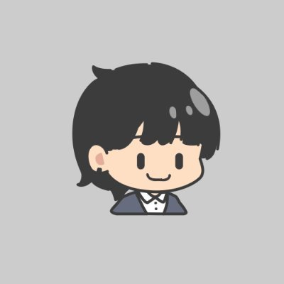

楕円惑星を360°移動
球体・楕円体の惑星を、側面も裏側もぐるりと移動。地形に沿う重力を感じながら、次の足場へ飛び移ろう。
小さなスライムと、無限の宇宙へ。
A SMALL SLIME, A VAST UNIVERSE.
惑星の裏側まで、ぐるりと冒険。
分身と協力で仕掛けを解く、
ステージクリア型3Dアクションゲーム。
ひとりでも、ふたりでも。分身と協力で道をひらく。
基本操作は親しみやすく、技の組み合わせは奥深く。
操作が苦手な人を助ける「らくらくスタイル」も用意しています。
球体・楕円体の惑星を、側面も裏側もぐるりと移動。地形に沿う重力を感じながら、次の足場へ飛び移ろう。
2体に分身し、操作を切り替えて仕掛けを攻略。片方がスイッチを押し、もう片方が足場を渡る。役割分担が道をひらく。
ひとりなら2体を切り替え、ふたりなら1体ずつ操作。同じステージで声をかけ合い、仕掛けや戦闘を一緒に乗り越えよう。
複数レイキャストと楕円体表面の法線計算で、惑星の表・側面・裏側でも接地、姿勢、重力を安定して更新。どこへ進んでも自然に歩ける探索を支える。
高さレイヤーを切り替えながら、積み木のようにActorを配置して3Dプレビューで確認。自作ステージを保存して遊べるため、冒険の幅を広げる。
ステージ・UIの選択、移動・回転・拡縮、複製、削除、Undoをゲーム内で操作。試しながら細部を磨き、遊びやすい手触りへ素早く調整できる。
エディタの作業状態を保存して別プロセスでビルド・再起動し、起動後に復元。確認と修正の往復を短縮し、操作感や難易度を繰り返し磨ける。

日本語文章を解析して読みを取得し、漢字の真上にルビを表示。チュートリアルや会話を読み取りやすくし、子どもや操作に不慣れな人の理解を支える。
球体惑星を舞台に最後の一人を目指す、VR対応のオンラインPvPシューティング。逃げる敵や壁の向こうの敵も、惑星の反対側から追い詰められる。射撃やふわりとしたジャンプ、多彩なスキルを使い、ラウンドを勝ち抜こう。
担当 チームリーダーとして進捗・タスクを調整。プレイヤー制御、射撃・リロード、スキル、ラウンド進行を主に実装。
ゲーム内速度を切り替えながらゴールを目指す3Dアクション。速くすればタイムを縮められる一方、ギミックも加速して難易度が上がる。二段ジャンプやお助けモードで、初心者も楽しめる。
株式会社ガンバリオン
1day インターンシップ
参加済み株式会社Cygames
5day インターンシップ
参加済み株式会社マーベラス
1day インターンシップ
参加済み株式会社セガ
1day プログラム
参加済み株式会社Colorful Palette
1month インターンシップ
参加予定株式会社カプコン
2day プログラム
参加予定TOKYO GAME SHOW 2026 ／ IGDA JAPAN SCHOLARSHIP
スカラー生として東京ゲームショウ2026に参加し、IGDA日本ブースで自作ゲーム『Slime’s Space Travel』を展示しました。初めて遊ぶ方の反応を直接見て、惑星の裏側へ向かう導線や操作の伝え方を見直すきっかけになりました。

Game Programmer
弘前大学 理工学部 電子情報工学科 3年
2028年3月卒業予定
「ゲームが苦手」と感じる人を一人でも減らし、家族や友人とゲームを楽しめる体験を、より多くの人に届けたいと考えています。
初心者や子どもでも迷わず遊べる分かりやすさと、ゲームに慣れた人にも楽しめる遊びの深さを両立したゲームづくりが目標です。本作では、迷いにくいステージ構成、2人プレイ、らくらくスタイルでその考えを形にしています。
企画から実装、ステージ・UI、開発ツールまで個人で制作し、プレイの反応をもとに改善を重ねています。
ゲームプログラマー職のインターン・新卒採用について、お気軽にご連絡ください。